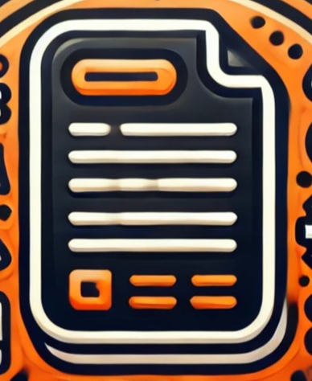

Software Documentation Website
The aim of this project was to create a website that showcased the software documentation of projects. The website was linked to the Portfolio Website, creating a small network, which was an important step besides creating the page. Similarly to the portfolio, the GitHub Pages service was used to deploy this project. The Software Documentation Website is meant for continuous development, as it should be updated along with the creation of new projects.
Self paced project, continuous development.
Gallery

Main page of website.

Main page of RK and FRK Comparison project.

Project scope of RK and FRK Comparison.

Requirements of RK and FRK Comparison.

Code documentation main page generated by Sphinx.
{kind=link}
Project scope of the Portfolio Website.
Project Results
- The website contains the software documentation of projects, such as scope, requirements, interfaces description and bibliography. For some projects, the code documentation is also available.
- The website can easily redirect user back to portfolio from main page.
- The Sphinx RTD code documentation was added for RK and FRK Comparison project. User can return to the project page using the link on the Sphinx main page.
- The website is meant for continous development along with Portfolio website.
Follow the link to visit the website or check it's documentation:
